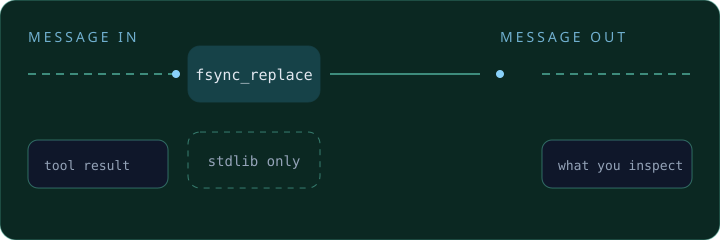

Why not os.replace alone
os.replace is atomic, but a temporary file that was never flushed can still be empty after a power loss, and the rename is only durable once the directory entry is flushed too. Both are done here. atomicwrites stopped at the same problem in 2022 and does not fsync the directory.
Install
consolepip install fsync-replace
API
write_atomic(path, data, mode="w", encoding="utf-8", *, fsync=True, newline=None, preserve_mode=True) -> int
Writes str (text modes) or bytes (mode="wb") and returns the number of characters or bytes written.
fsync=Falseskips both flushes, for scratch files where durability does not matter.preserve_modecopies the permission bits of the file being replaced, so a script
that was 0700 stays 0700. A new file keeps the default umask.
- A missing parent directory raises
FileNotFoundErrorbefore anything is created.
atomic_open(path, mode="w", encoding="utf-8", *, fsync=True, newline=None, preserve_mode=True)
Context manager yielding an open handle. On a clean exit the file is moved into place; on an exception the temporary file is removed and the target is left as it was. The exception is not swallowed.
Limits
- Durability is per file. Replacing several files is not a transaction; if you need
that, write a directory and swap it, or use a database.
fsyncon the directory is skipped on Windows, whereos.replaceis already
durable and directories cannot be opened for writing.
- Temporary files are named
.<target>.<random>.tmpin the same directory, because a
rename across filesystems is not atomic. A crash in the middle leaves one behind.
Development
consolepython -m venv .venv
.venv/bin/pip install -e ".[test]"
.venv/bin/pytest
The suite covers every line of the package (pytest --cov --cov-branch), and the examples in the docstrings run as tests through --doctest-modules.
License
MIT.